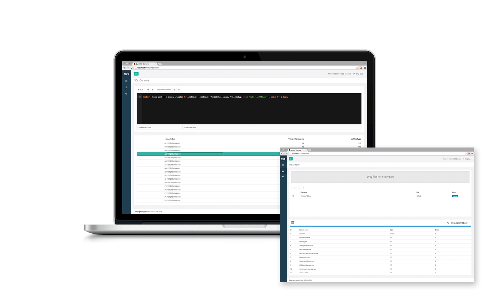

Feature highlights
QuestDB is high-performance time series database. Used as central repository of time series data QuestDB supports real-time analysis of billions of rows via familiar SQL queries and a web browser.
High throughput, low latency
QuestDB uses back to basics approach to software working in harmony with hardware. From cache efficient algos, lock- and wait-free data structures and zeroGC Java, results do not disappoint. As an indication it isn't unusual to write at over 2M records/sec and read at over 15M records/s
Scalable performance
QuestDB amazing single-core performance scales vertically on multi-core platforms and horizontally across multiple instances. QuestDB server is multi-threaded, making vertical scalability automatic. Horizontal scalability is achieved via hardware load-balancer and data replication. We are developing support for distributed queries to allow aggregation of data from multiple nodes in one place
Full Fat SQL
Intelligent SQL optimiser is the heart of QuestDB. It generates reliable plans that do not degrade over time. It supports wide range of conventional queries, such as filtering, sub-queries, multi-table joins, ordering, aggregation, analytic function. In addition QuestDB optimiser extends SQL with time series support, such as "as of" joins, flexible interval search, resampling and temporal data queries
Powerful visualisation
We are very excited to be developing integration with D3.js and Vega. This will allow to leverage QuestDB queries to transform or reduce data before it flows into powerful Vega visualisation grammar.
Operational simplicity
QuestDB is a small 3MB executable. It has tiny hardware footprint and single configuration text file. Easy to get going, just unzip and run. Comprehensive monitoring options are available via Web/REST interface
Seamless integration
QuestDB can be accessed via REST or from Java. It is easy and fast to get data in an out.

QuestDB 1.0 64-bit
Performance, Distilled
QuestDB supports 64-bit versions of Windows, Linux and OSX. Distribution package is cross-platform and does not require installation. Just unzip and run.
DownloadLicense
QuestDB is an OpenSource software. It's core components are distributed under GNU Affero GPLv3 License. QuestDB Console and JavaScript components are distributed under The MIT License. By downloading the software you agree to terms and conditions of these Licenses.
Please contact copyright holders if you require more permissive license
Community
We actively develop QuestDB and we value any feedback we receive. We are keen to know our users and be able to help you to get the most out of QuestDB features. You help us shape our roadmap and establish priorities.
GitHub
Fork Us on GitHub
Our codebase is unorthodox for a Java project. It is dominated by native memory use, custom data structures and object reuse. So if you prefer CharSequence over String you are ready!
Join chat
We provide answers to technical questions within minutes and usually solve problems within a day. Let us know if you require a feature. Help us prioritise work.